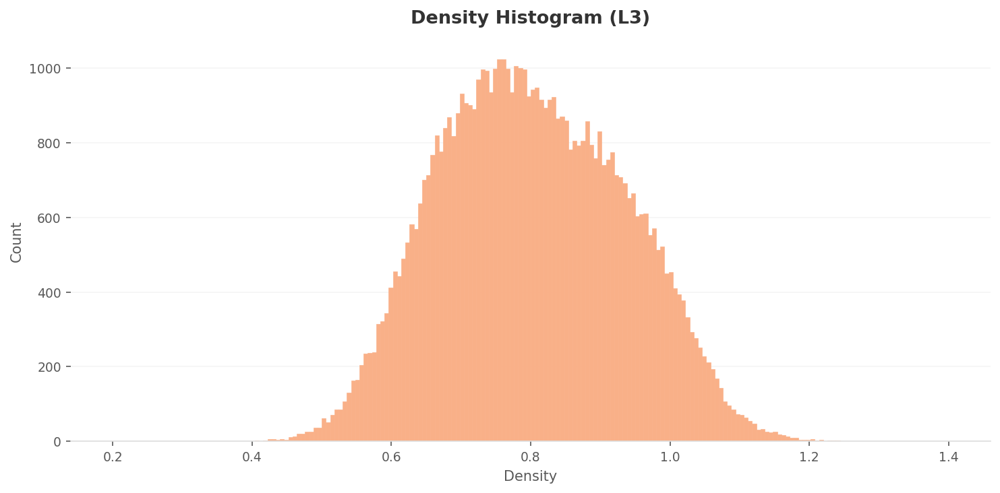
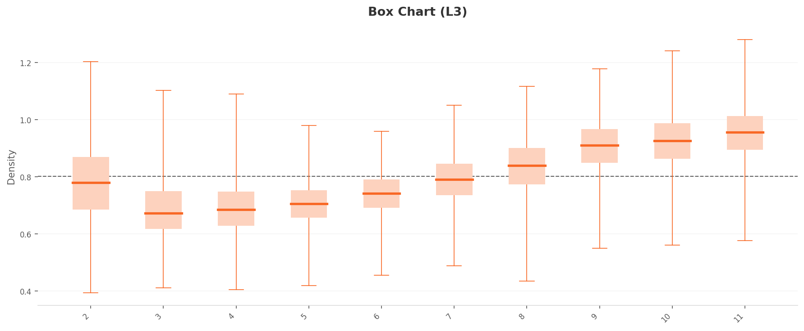

Executive Summary
WhiteStarMNIST is a synthetic geometric shape dataset created by Pebblous DAL (Data Art Lab). Black stars, polygons, circles, triangles, and crescents on a white background. Ten classes, 60,000 images, 28x28 grayscale. Same format as MNIST, but geometric shapes instead of handwritten digits. The team that built this dataset diagnosed it with their own product, DataClinic. The result: a score of 54. Rating: "Poor."
Here is the key finding. The mean images of all ten classes are the same gray circle. A 4-pointed star and an 8-pointed star are clearly different shapes, yet averaging them cancels out the vertices and both converge into the same circular blob. In pixel space, the classes are indistinguishable. In feature space (L2/L3), high-density duplicates concentrate in Class 11 (star patterns), while Classes 3, 4, and 5 show wider dispersion, forming a clear two-group split.
Dimensionality optimization (from 1,280 down to 155 dimensions) amplified this gap threefold. It preserved the structure while enhancing class separability, but did not solve the fundamental lack of data diversity. Two prescriptions follow: a Data Diet to remove duplicate data from Class 11, and a Data Bulk-Up to add variations to Classes 3, 4, and 5. Diagnosing your own data with your own tool and refusing to hide a score of 54 out of 100 — that is honest self-assessment of data quality.
Birth of a Star — WhiteStarMNIST
WhiteStarMNIST was born in Pebblous DAL (Data Art Lab), a research unit that treats data as both raw material and finished artwork. The star-shape data that originated in the 2019 Star Swap series was refined into the 28x28 grayscale format of MNIST and became a standalone dataset. True to its name: White background, Star shapes, in MNIST format.
The collage below captures the overall impression of WhiteStarMNIST. Black geometric shapes arranged in various configurations on white backgrounds — stars, polygons, circles, triangles, crescents, flower-like forms. An entirely different world from handwritten digits: the realm of synthetic geometric forms.

▲ WhiteStarMNIST at a glance — 10 classes of black geometric shapes on white backgrounds, 60,000 images
1.1MNIST vs WhiteStarMNIST
Same format, different worlds. Where MNIST captures the tremor and pressure variations of human handwriting, WhiteStarMNIST contains pure geometric forms generated by algorithms. The foreground-background inversion is also striking: MNIST uses white digits on a black background, while WhiteStarMNIST uses black shapes on white.
| Item | MNIST | WhiteStarMNIST |
|---|---|---|
| Creator | Yann LeCun (NYU) | Pebblous DAL |
| Classes | 0-9 (handwritten digits) | 2-11 (geometric shapes) |
| Image count | 60,000 (train) | 60,000 |
| Resolution | 28x28 Grayscale | 28x28 Grayscale |
| Background | Black bg + white digits | White bg + black shapes |
| Generation | Scanned handwriting | Synthetic (algorithmic) |
| Pixel distribution | Anti-aliased gradients | Binary (clustered at 0/255) |
| Mean image separability | Distinct per digit | All identical circular blobs |
Average the handwritten 3s and 8s from MNIST, and the results still look different — the stroke trajectories diverge. But average a 4-pointed star and an 8-pointed star? The vertices are evenly distributed in every direction, so they cancel each other out, and both collapse into the same circle. This is the central paradox of WhiteStarMNIST.
What Self-Diagnosis Means
The DAL team that built this dataset and the DataClinic diagnostic tool are both products of the same company: Pebblous. They diagnosed their own data with their own tool and published a score of 54. The data art that started with Star Swap (2019) receives its quality report card seven years later. | View Full Diagnostic Report →
What You See and What You Don't — Level I Diagnosis
Level I examines the basic statistics of the images: integrity, missing values, class balance, pixel distribution, and mean images. WhiteStarMNIST scores mostly "Good" at Level I. All images are consistently 28x28 grayscale, there are no missing values, and class balance is solid — 5,896 to 6,194 images per class (standard deviation 93.84). On the surface, a healthy dataset. Yet the statistics rating is only "Fair." There is a reason.
2.1Ten Completely Different Classes, Ten Identical Means
Look at the ten cards below. On the left is an actual sample from each class. On the right is that class's mean image. The actual shapes are clearly distinct — stars, polygons, circles, triangles, crescents, flower-like forms. Now look at the mean images on the right. Every single one is the same gray circle.
 Actual
Actual
 Mean
Mean
 Actual
Actual
 Mean
Mean
 Actual
Actual
 Mean
Mean
 Actual
Actual
 Mean
Mean
 Actual
Actual
 Mean
Mean
 Actual
Actual
 Mean
Mean
 Actual
Actual
 Mean
Mean
 Actual
Actual
 Mean
Mean
 Actual
Actual
 Mean
Mean
 Actual
Actual
 Mean
Mean
▲ Left (Actual): The 10 classes are clearly different shapes. Right (Mean): Yet averaging them all produces the same circle.
Why does this happen? Every shape is centered in the image, similar in size, with vertex orientations evenly distributed. When directionality cancels out, what remains is a circle. Humans see contours and instantly distinguish shapes, but pixel averaging destroys contour information entirely. This is the fundamental limitation of pixel space.
2.2The Overall Mean Image
What happens when you average all 60,000 images? As expected, a single faint gray circular blob remains at the center. Edges fade out smoothly, confirming that all classes share a center-focused layout.

▲ The mean of 60,000 images — average a star and you get a circle
2.3Pixel Histogram — Binary Black-and-White Silhouettes
The pixel distribution is an extreme U-shape. Values cluster overwhelmingly at 0 (black) and 255 (white), with virtually nothing in the midtones (50-200). The 255 peak is roughly 8-10 times higher than the 0 peak, reflecting the white-dominant background. The R, G, and B channels overlap perfectly, confirming pure grayscale. Unlike the smooth anti-aliased edges of MNIST, WhiteStarMNIST shapes are crisp black-and-white silhouettes with razor-sharp boundaries.
▲ Extreme concentration at 0 and 255 — binary silhouettes with virtually no midtones
So What: Looking at Level I alone, this dataset appears healthy. Integrity is good, no missing values, class balance is good. Yet the mean images of all 10 classes are indistinguishable. Traditional statistics (mean, variance) reveal nothing about class separability in this dataset. That is precisely why Level II and Level III feature-space analysis is essential.
Cracks Revealed in Feature Space — Level II Diagnosis
Level II analyzes images in the 1,280-dimensional feature space of the Wolfram ImageIdentify Net V2 neural network. Instead of raw pixels, it examines data through the high-dimensional characteristics that a neural network perceives. What do the ten classes — indistinguishable in pixel space — look like in feature space?
3.1Density Distribution — A Clear Two-Group Split
The L2 density histogram shows a right-skewed bell distribution peaking around 0.25-0.28. The majority of data points are concentrated in the 0.18-0.36 range. Overall density is relatively high, suggesting significant inter-sample similarity and raising concerns about diversity.
More telling is the per-class density box plot. The ten classes split into two distinct groups. The high-density group (Classes 9, 10, 11: median 0.31-0.33) and the low-density group (Classes 3, 4, 5: median 0.23-0.25) are separated by roughly 0.08-0.10. Class 11 in particular has the widest IQR, with whiskers extending to 0.43 — a sign that highly similar images are excessively concentrated. Effectively near-duplicates.
 Density
High-density
Density
High-density
 Box chart
Box chart
 Low-density
Low-density
▲ Left: chart / Right: representative image from the density extreme
3.2PCA and Density Heatmap
In the PCA scatter plot, the 60,000 data points form a single massive circular cluster with no clear class boundaries. This is characteristic of MNIST-type datasets where shape features transition continuously. The density heatmap reveals a dense core at the center that gradually fades outward, with the darkest high-density region concentrated in the upper-center area.

L2 PCA — a single circular cluster

L2 density heatmap — central hotspot
3.3Outliers — Class 11 Dominates
All ten of the top high-density outliers belong to Class 11. They cluster in the 0.41-0.43 density range, all showing the same canonical star pattern with rays radiating from the center. The forms are nearly identical — virtual duplicates. Class 11 has extremely low internal variability, meaning it lacks diversity.
On the other end, the low-density outliers are distributed across Class 3 (3 images), Class 2 (3 images), Class 4 (1), and Class 5 (1). With densities of 0.13-0.14, they sit at less than half the overall mean (0.27). These images deviate from the typical patterns of their respective classes. Positioned at the periphery of feature space, they add diversity, but extreme cases may warrant label-error checks.
 Density
Actual
Density
Actual
 Density
Actual
Density
Actual
 Density
Actual
Density
Actual
▲ Left: per-class density distribution chart / Right: representative image from that class
A New Landscape After Dimensionality Optimization — Level III Diagnosis
Level III optimizes the feature space from 1,280 dimensions down to 155. It strips away unnecessary variance and sharpens class separability. How do the patterns observed at L2 change at L3?
4.1Density Scale Triples, Gap Widens 2.5x
The L3 density histogram peak shifts to 0.70-0.80, roughly a threefold increase in density scale compared to L2 (0.25-0.28). Dimensionality reduction compresses inter-point distances, raising overall density. The distribution range also expands to 0.40-1.20.
The box plot tells a more dramatic story. The two-group split from L2 is amplified at L3. The high-density group (Classes 9, 10, 11: median 0.90-0.95) and the low-density group (Classes 3, 4, 5: median 0.67-0.70) are now separated by approximately 0.25 — 2.5 times the L2 gap (0.10). Dimensionality optimization has made class-level density characteristics far more visible. The upper whisker for Class 11 extends to 1.27.

Density High-density
High-density

Box chart Low-density
Low-density
▲ After dimensionality optimization: density scale up 3x, inter-class gap up 2.5x
4.2PCA and Density Heatmap
At L3, data points form three or more major clusters in the PCA plot, though the boundaries between clusters are not fully separated and show connective structures. Compared to L2, points within each cluster are more tightly condensed. The density heatmap shows that extreme hotspots are reduced relative to L2, with a more uniform overall distribution. Dimensionality optimization has mitigated the extreme density concentration.

L3 PCA — condensed clusters

L3 density heatmap — extreme concentration mitigated
4.3Consistent Outlier Patterns
L3 outliers follow the same pattern as L2. On the high-density side, Class 11 (9 out of 10) and Class 10 (1 out of 10) dominate. On the low-density side, Class 2 (5 out of 10) and Class 3 (3 out of 10) lead. The outlier structure persists consistently even after dimensionality reduction, meaning the data quality issues are dimension-independent.
Key Takeaway: Dimensionality optimization from L2 to L3 (1,280 to 155 dimensions) produced three effects. First, a 3x increase in density scale. Second, a 2.5x increase in inter-class separation. Third, a one-grade improvement in both the distribution rating (from "Fair" to "Good") and the geometry rating (from "Poor" to "Fair"). It preserved structure while enhancing class separability. However, the fundamental problems — overcrowding in Class 11 and sparsity in Classes 3, 4, and 5 — cannot be resolved by dimensionality optimization alone.
Anatomy of 54 Points — Overall Diagnosis
WhiteStarMNIST's overall score is 54, rating "Poor." Unfolding the individual grades from Level I through Level IV reveals exactly where the dataset is healthy and where it hurts.
| Diagnostic Item | Rating | Meaning |
|---|---|---|
| L1 Integrity | Good | Consistent 28x28 Grayscale |
| L1 Missing Values | Good | No missing data |
| L1 Class Balance | Good | Std 93.84 (1.6%) |
| L1 Statistics | Fair | Mean images indistinguishable |
| L2 Geometry | Poor | Negative geometric properties |
| L2 Distribution | Fair | Bell-shaped, small class differences |
| L3 Geometry | Fair | 3+ clusters, similar manifolds |
| L3 Distribution | Good | Improved after dim. optimization |
| Overall: 54 — Poor | ||
The surface (L1) is healthy, but cracks begin at depth (L2). The L2 Geometry rating of "Poor" is the primary factor dragging down the overall score. L3 dimensionality optimization recovers Geometry to "Fair" and Distribution to "Good," but it cannot fully offset the fundamental L2 issues.
5.1L2 vs L3 Comparison
| Item | L2 (1,280 dim.) | L3 (155 dim.) |
|---|---|---|
| Density range | 0.13 - 0.43 | 0.39 - 1.28 |
| Density peak | 0.25 - 0.28 | 0.70 - 0.80 |
| High/low group gap | ~0.10 | ~0.25 (2.5x) |
| Geometry rating | Poor | Fair |
| Distribution rating | Fair | Good |
| High-density outliers | Class 11 dominant | Class 11 dominant (same) |
| Low-density outliers | Class 2, 3 lead | Class 2, 3 lead (same) |
Prescriptions and Comparison
DataClinic's prescriptions come in two flavors: a Data Diet to thin out overcrowded areas, and a Data Bulk-Up to fill in sparse ones.
6.1DC Story Score Spectrum
Where does WhiteStarMNIST's score of 54 sit among datasets diagnosed by DataClinic? It is the lowest among Pebblous's own synthetic datasets, 33 points behind defense synthetic data (87-88). The same company built both — so why the gap? Defense data includes real-world background variation, lighting, and camera parameter diversity, while WhiteStarMNIST is purely geometric with limited controlled variation.
| Report | Dataset | Score | Rating | Domain |
|---|---|---|---|---|
| #124 | PBLS_NavyDL | 88 | Good | Defense synthetic |
| #226 | PBLS_Drone | 87 | Good | Defense synthetic |
| #225 | PBLS_Military3 | 79 | Fair | Defense synthetic |
| #116 | Birds 525 | 77 | Fair | Nature |
| #59 | Korean Food | 71 | Fair | Food |
| #224 | PBLS_Military | 68 | Fair | Defense synthetic |
| #102 | WhiteStarMNIST | 54 | Poor | Art synthetic |
| #115 | WikiArt | 53 | Poor | Art |
| #131 | IndustrialWaste | 51 | Poor | Industrial |
WikiArt (53) and WhiteStarMNIST (54) are nearly tied. Both share a common trait: visually ambiguous class boundaries. Artistic styles and geometric vertex counts are similarly hard to distinguish with pixel-level statistics.
What Self-Diagnosis Means: This article documents Pebblous scoring its own data with its own tool. The score of 54 is published without concealment. This kind of honesty about data quality is what builds trust in a business that sells data quality diagnostics. And with prescriptions in hand, the path to improvement is clear. A Data Diet to remove duplicates. A Data Bulk-Up to add diversity. Average a star and you get a circle — but restoring distinct stars from that circle is the data engineer's job.
References
- • LeCun, Y., Cortes, C., & Burges, C. J. (1998). The MNIST database of handwritten digits. AT&T Labs.
- • Pebblous Data Art Lab (2019). Star Swap Series. blog.pebblous.ai/project/DAL/star-swap-2019/
- • DataClinic Report #102 — WhiteStarMNIST. dataclinic.ai/en/report/102